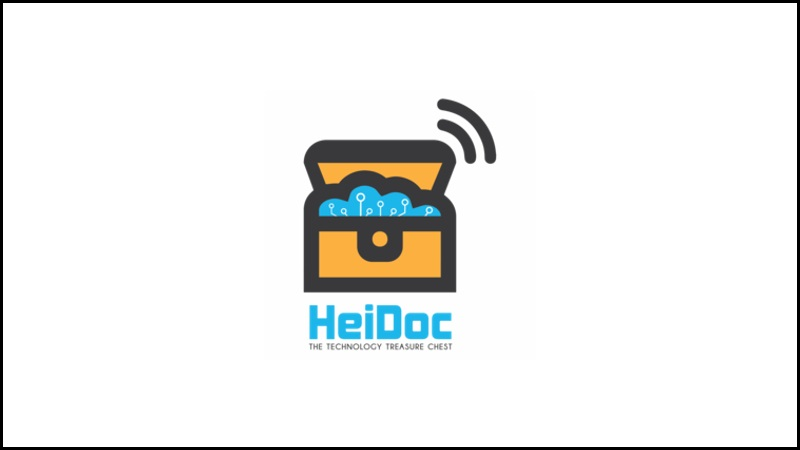
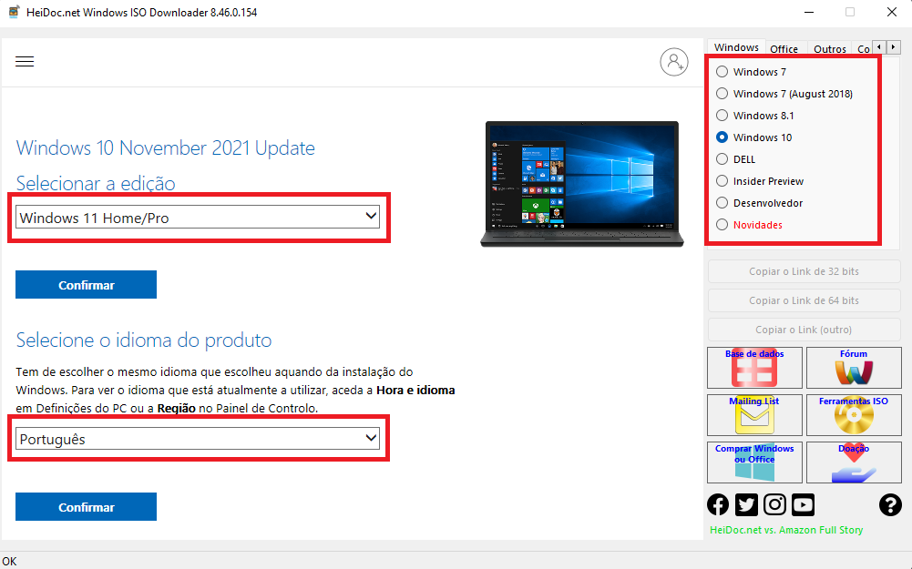
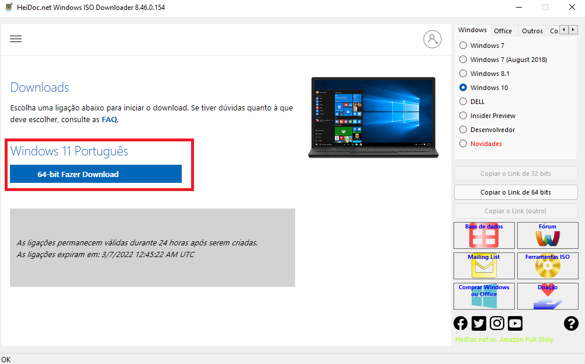
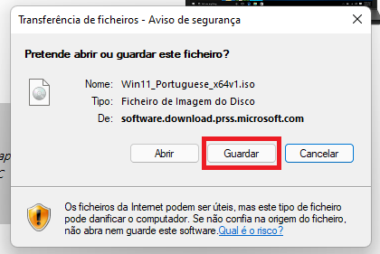

SoftwareCenter: Como Utilizar o HeiDoc ISO Downloader
Descubra como Utilizar o HeiDoc. Em Apenas 5 Passos.
Por Bruno Pinheiro; Para O SoftwareCenter
05/03/2022 10h49 • Atualizado há 9 dias

O que é o HeiDoc ISO Downloader
Esta ferramenta permite de uma maneira fácil baixar imagens de disco (ISO) genuínas do Windows 7, Windows 8.1, Windows 10 e windows 11 diretamente dos servidores da Microsoft.
Download:
Version: 8.46
Release Date: 8 January 2021
Requirements: Windows 7 or newer, .NET Framework 4.x, Internet Explorer 8 or newer.
Como Utilizar o HeiDoc ISO Downloader
Passo 1. Faça o download do HeiDoc ISO Downloader que está acima.
Passo 2. Abra a Aplicação.
Passo 3. Quando a Aplicação estiver aberta basta escolher qual o produto do lado direito a versão que pretende e clicar "Confimar".
Passo 4. E em seguida faça o download da ISO de 32 ou 64 bits (Neste caso só tinha 64 bits).
Passo 5. E está feito, agora basta guardar a ISO no seu pendrive.
Depois de descarregarem, é só instalar. No caso do Windows podem criar uma PEN de instalação ou então virtualizar o sistema usando, por exemplo, o VirtualBox ou VMWare.